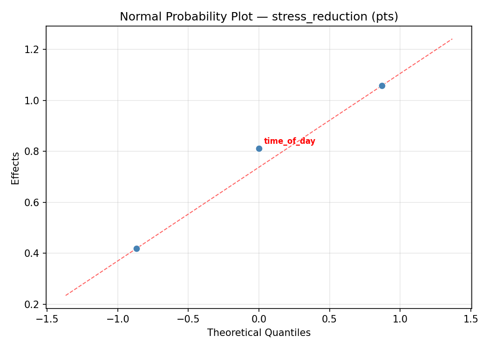
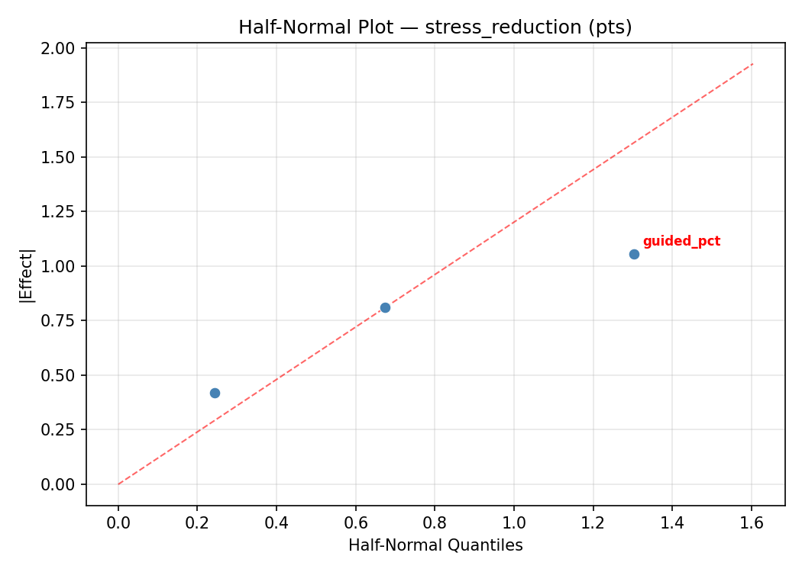
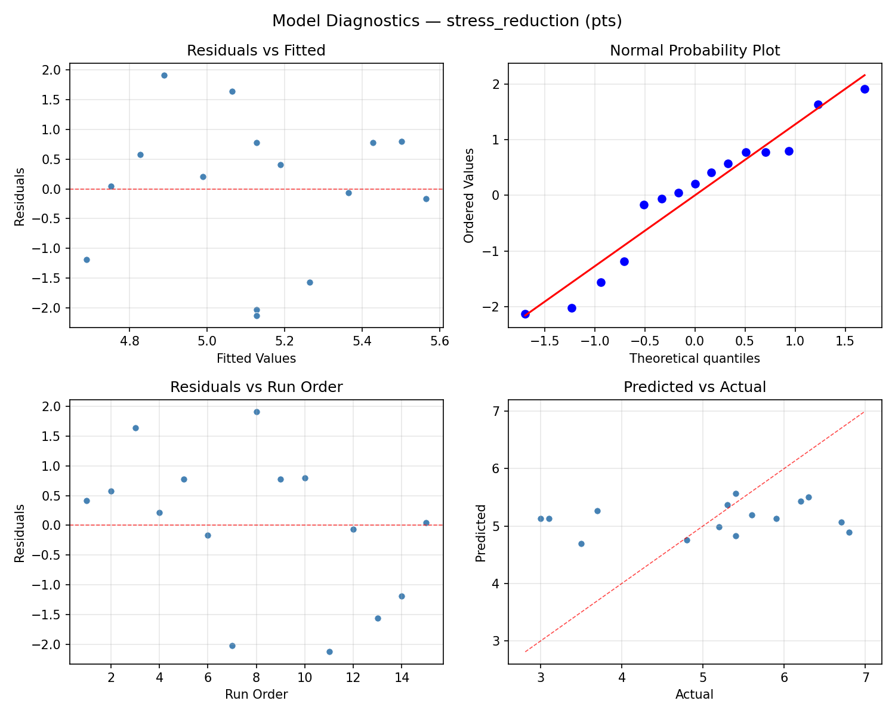
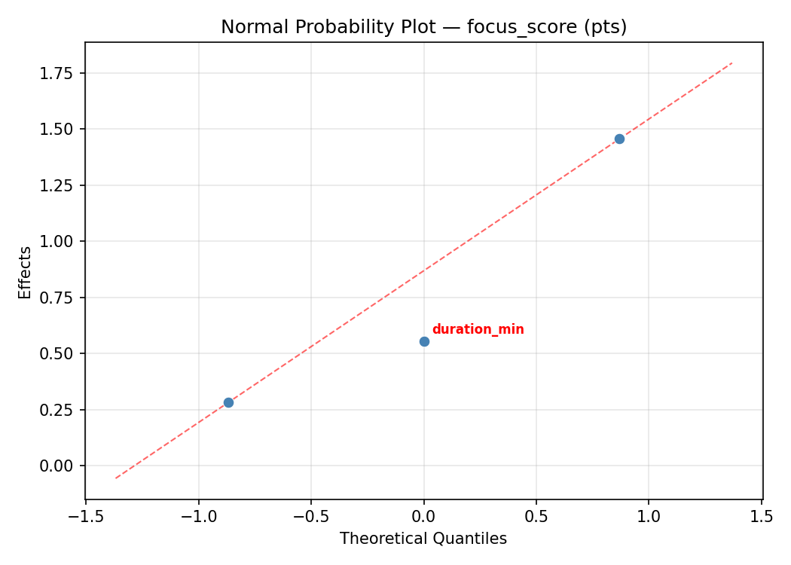
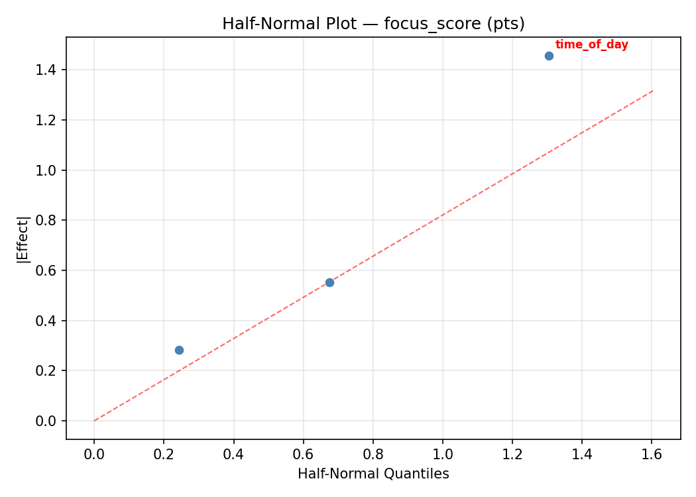
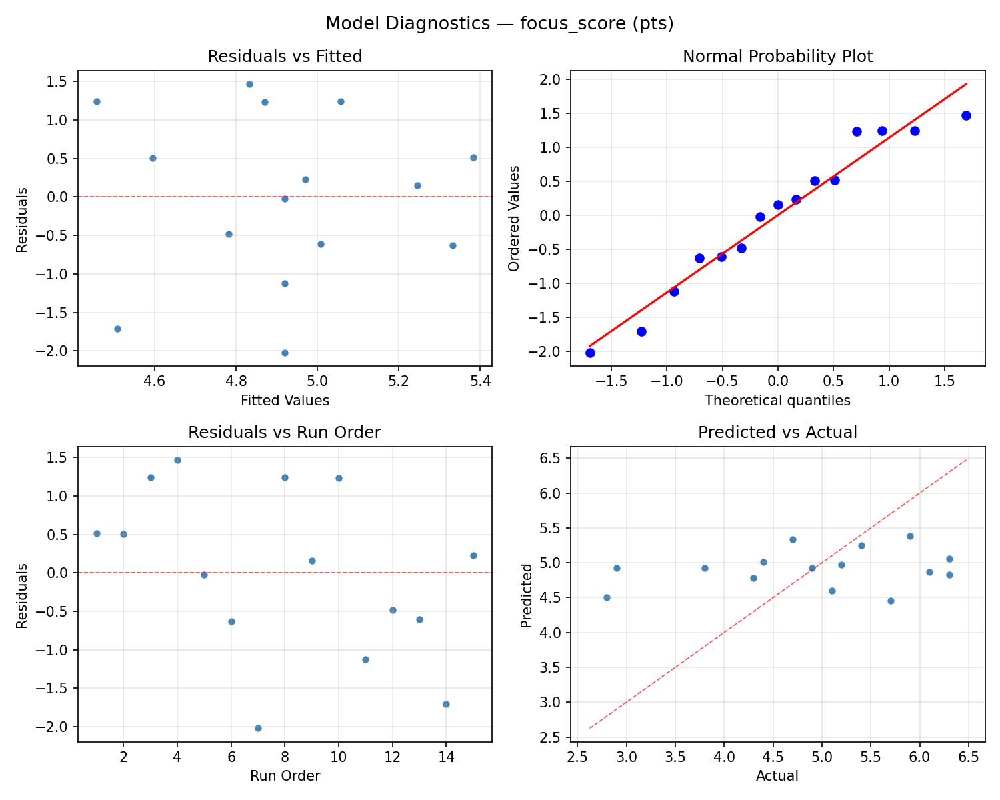

Summary
This experiment investigates meditation routine effectiveness. Box-Behnken design to maximize stress reduction and focus improvement by tuning session duration, time of day, and technique.
The design varies 3 factors: duration min (min), ranging from 5 to 30, time of day (hour), ranging from 6 to 22, and guided pct (%), ranging from 0 to 100. The goal is to optimize 2 responses: stress reduction (pts) (maximize) and focus score (pts) (maximize). Fixed conditions held constant across all runs include frequency = daily, environment = quiet_room.
A Box-Behnken design was chosen because it efficiently fits quadratic models with 3 continuous factors while avoiding extreme corner combinations — requiring only 15 runs instead of the 8 needed for a full factorial at two levels.
Quadratic response surface models were fitted to capture potential curvature and factor interactions. The RSM contour plots below visualize how pairs of factors jointly affect each response.
Key Findings
For stress reduction, the most influential factors were guided pct (42.5%), duration min (40.8%), time of day (16.6%). The best observed value was 6.8 (at duration min = 30, time of day = 6, guided pct = 50).
For focus score, the most influential factors were duration min (49.3%), time of day (36.5%), guided pct (14.2%). The best observed value was 6.3 (at duration min = 5, time of day = 22, guided pct = 50).
Recommended Next Steps
- Run confirmation experiments at the predicted optimal settings to validate the model.
- Consider whether any fixed factors should be varied in a future study.
Experimental Setup
Factors
| Factor | Low | High | Unit |
|---|
duration_min | 5 | 30 | min |
time_of_day | 6 | 22 | hour |
guided_pct | 0 | 100 | % |
Fixed: frequency = daily, environment = quiet_room
Responses
| Response | Direction | Unit |
|---|
stress_reduction | ↑ maximize | pts |
focus_score | ↑ maximize | pts |
Configuration
{
"metadata": {
"name": "Meditation Routine Effectiveness",
"description": "Box-Behnken design to maximize stress reduction and focus improvement by tuning session duration, time of day, and technique"
},
"factors": [
{
"name": "duration_min",
"levels": [
"5",
"30"
],
"type": "continuous",
"unit": "min"
},
{
"name": "time_of_day",
"levels": [
"6",
"22"
],
"type": "continuous",
"unit": "hour"
},
{
"name": "guided_pct",
"levels": [
"0",
"100"
],
"type": "continuous",
"unit": "%"
}
],
"fixed_factors": {
"frequency": "daily",
"environment": "quiet_room"
},
"responses": [
{
"name": "stress_reduction",
"optimize": "maximize",
"unit": "pts"
},
{
"name": "focus_score",
"optimize": "maximize",
"unit": "pts"
}
],
"settings": {
"operation": "box_behnken",
"test_script": "use_cases/110_meditation_routine/sim.sh"
}
}
Experimental Matrix
The Box-Behnken Design produces 15 runs. Each row is one experiment with specific factor settings.
| Run | duration_min | time_of_day | guided_pct |
|---|
| 1 | 17.5 | 6 | 0 |
| 2 | 17.5 | 14 | 50 |
| 3 | 30 | 14 | 100 |
| 4 | 30 | 14 | 0 |
| 5 | 17.5 | 14 | 50 |
| 6 | 17.5 | 14 | 50 |
| 7 | 5 | 14 | 100 |
| 8 | 30 | 6 | 50 |
| 9 | 17.5 | 6 | 100 |
| 10 | 30 | 22 | 50 |
| 11 | 5 | 14 | 0 |
| 12 | 17.5 | 22 | 100 |
| 13 | 5 | 6 | 50 |
| 14 | 5 | 22 | 50 |
| 15 | 17.5 | 22 | 0 |
Step-by-Step Workflow
1
Preview the design
$ python doe.py info --config use_cases/110_meditation_routine/config.json
2
Generate the runner script
$ python doe.py generate --config use_cases/110_meditation_routine/config.json \
--output use_cases/110_meditation_routine/results/run.sh --seed 42
3
Execute the experiments
$ bash use_cases/110_meditation_routine/results/run.sh
4
Analyze results
$ python doe.py analyze --config use_cases/110_meditation_routine/config.json
5
Get optimization recommendations
$ python doe.py optimize --config use_cases/110_meditation_routine/config.json
6
Multi-objective optimization
With 2 competing responses, use --multi to find the best compromise via Derringer–Suich desirability.
$ python doe.py optimize --config use_cases/110_meditation_routine/config.json --multi
7
Generate the HTML report
$ python doe.py report --config use_cases/110_meditation_routine/config.json \
--output use_cases/110_meditation_routine/results/report.html
Features Exercised
| Feature | Value |
|---|
| Design type | box_behnken |
| Factor types | continuous (all 3) |
| Arg style | double-dash |
| Responses | 2 (stress_reduction ↑, focus_score ↑) |
| Total runs | 15 |
Analysis Results
Generated from actual experiment runs using the DOE Helper Tool.
Response: stress_reduction
Top factors: guided_pct (42.5%), duration_min (40.8%), time_of_day (16.6%).
ANOVA
| Source | DF | SS | MS | F | p-value |
|---|
| Source | DF | SS | MS | F | p-value |
| duration_min | 2 | 2.7433 | 1.3716 | 0.471 | 0.6404 |
| time_of_day | 2 | 0.5350 | 0.2675 | 0.092 | 0.9131 |
| guided_pct | 2 | 3.0175 | 1.5088 | 0.518 | 0.6141 |
| Lack | of | Fit | 6 | 10.1135 | 1.6856 |
| Pure | Error | 2 | 5.8200 | | |
| Error | 8 | 15.9335 | 2.9100 | | |
| Total | 14 | 22.2293 | 1.5878 | | |
Pareto Chart

Main Effects Plot

Normal Probability Plot of Effects

Half-Normal Plot of Effects

Model Diagnostics

Response: focus_score
Top factors: duration_min (49.3%), time_of_day (36.5%), guided_pct (14.2%).
ANOVA
| Source | DF | SS | MS | F | p-value |
|---|
| Source | DF | SS | MS | F | p-value |
| duration_min | 2 | 1.6719 | 0.8359 | 0.629 | 0.5578 |
| time_of_day | 2 | 0.9122 | 0.4561 | 0.343 | 0.7196 |
| guided_pct | 2 | 0.1065 | 0.0532 | 0.040 | 0.9609 |
| Lack | of | Fit | 6 | 12.2934 | 2.0489 |
| Pure | Error | 2 | 2.6600 | | |
| Error | 8 | 14.9534 | 1.3300 | | |
| Total | 14 | 17.6440 | 1.2603 | | |
Pareto Chart

Main Effects Plot

Normal Probability Plot of Effects

Half-Normal Plot of Effects

Model Diagnostics

Response Surface Plots
3D surfaces fitted with quadratic RSM. Red dots are observed data points.
focus score duration min vs guided pct

focus score duration min vs time of day

focus score time of day vs guided pct

stress reduction duration min vs guided pct

stress reduction duration min vs time of day

stress reduction time of day vs guided pct

Multi-Objective Optimization
When responses compete, Derringer–Suich desirability finds the best compromise.
Each response is scaled to a 0–1 desirability, then combined via a weighted geometric mean.
Overall Desirability
D = 0.9545
Per-Response Desirability
| Response | Weight | Desirability | Predicted | Dir |
|---|
stress_reduction |
1.5 |
|
6.80 0.9545 6.80 pts |
↑ |
focus_score |
1.5 |
|
6.30 0.9545 6.30 pts |
↑ |
Recommended Settings
| Factor | Value |
|---|
duration_min | 17.5 min |
time_of_day | 6 hour |
guided_pct | 100 % |
Source: from observed run #8
Trade-off Summary
Sacrifice = how much worse than single-objective best.
| Response | Predicted | Best Observed | Sacrifice |
|---|
focus_score | 6.30 | 6.30 | +0.00 |
Top 3 Runs by Desirability
| Run | D | Factor Settings |
|---|
| #10 | 0.8681 | duration_min=17.5, time_of_day=22, guided_pct=100 |
| #3 | 0.8621 | duration_min=5, time_of_day=14, guided_pct=100 |
Model Quality
| Response | R² | Type |
|---|
focus_score | 0.3396 | linear |
Full Multi-Objective Output
============================================================
MULTI-OBJECTIVE OPTIMIZATION
Method: Derringer-Suich Desirability Function
============================================================
Overall desirability: D = 0.9545
Response Weight Desirability Predicted Direction
---------------------------------------------------------------------
stress_reduction 1.5 0.9545 6.80 pts ↑
focus_score 1.5 0.9545 6.30 pts ↑
Recommended settings:
duration_min = 17.5 min
time_of_day = 6 hour
guided_pct = 100 %
(from observed run #8)
Trade-off summary:
stress_reduction: 6.80 (best observed: 6.80, sacrifice: +0.00)
focus_score: 6.30 (best observed: 6.30, sacrifice: +0.00)
Model quality:
stress_reduction: R² = 0.6846 (quadratic)
focus_score: R² = 0.3396 (linear)
Top 3 observed runs by overall desirability:
1. Run #8 (D=0.9545): duration_min=17.5, time_of_day=6, guided_pct=100
2. Run #10 (D=0.8681): duration_min=17.5, time_of_day=22, guided_pct=100
3. Run #3 (D=0.8621): duration_min=5, time_of_day=14, guided_pct=100
Full Analysis Output
=== Main Effects: stress_reduction ===
Factor Effect Std Error % Contribution
--------------------------------------------------------------
guided_pct 1.0786 0.3254 42.5%
duration_min 1.0357 0.3254 40.8%
time_of_day 0.4214 0.3254 16.6%
=== ANOVA Table: stress_reduction ===
Source DF SS MS F p-value
-----------------------------------------------------------------------------
duration_min 2 2.7433 1.3716 0.471 0.6404
time_of_day 2 0.5350 0.2675 0.092 0.9131
guided_pct 2 3.0175 1.5088 0.518 0.6141
Lack of Fit 6 10.1135 1.6856 0.579 0.7443
Pure Error 2 5.8200 2.9100
Error 8 15.9335 2.9100
Total 14 22.2293 1.5878
=== Summary Statistics: stress_reduction ===
duration_min:
Level N Mean Std Min Max
------------------------------------------------------------
17.5 7 5.4857 1.2734 3.0000 6.8000
30 4 5.1750 1.3099 3.5000 6.7000
5 4 4.4500 1.2396 3.1000 5.6000
time_of_day:
Level N Mean Std Min Max
------------------------------------------------------------
14 7 4.9286 1.2024 3.0000 6.3000
22 4 5.3500 1.7597 3.1000 6.8000
6 4 5.2500 1.1150 3.7000 6.2000
guided_pct:
Level N Mean Std Min Max
------------------------------------------------------------
0 4 5.8500 0.6856 5.3000 6.8000
100 4 5.0250 1.1673 3.5000 6.2000
50 7 4.7714 1.5119 3.0000 6.7000
=== Main Effects: focus_score ===
Factor Effect Std Error % Contribution
--------------------------------------------------------------
duration_min 0.7821 0.2899 49.3%
time_of_day 0.5786 0.2899 36.5%
guided_pct 0.2250 0.2899 14.2%
=== ANOVA Table: focus_score ===
Source DF SS MS F p-value
-----------------------------------------------------------------------------
duration_min 2 1.6719 0.8359 0.629 0.5578
time_of_day 2 0.9122 0.4561 0.343 0.7196
guided_pct 2 0.1065 0.0532 0.040 0.9609
Lack of Fit 6 12.2934 2.0489 1.541 0.4444
Pure Error 2 2.6600 1.3300
Error 8 14.9534 1.3300
Total 14 17.6440 1.2603
=== Summary Statistics: focus_score ===
duration_min:
Level N Mean Std Min Max
------------------------------------------------------------
17.5 7 5.2571 0.8264 3.8000 6.3000
30 4 4.7750 1.5607 2.8000 6.3000
5 4 4.4750 1.2339 2.9000 5.9000
time_of_day:
Level N Mean Std Min Max
------------------------------------------------------------
14 7 4.6714 1.1644 2.8000 6.1000
22 4 5.0250 1.4863 2.9000 6.3000
6 4 5.2500 0.8103 4.4000 6.3000
guided_pct:
Level N Mean Std Min Max
------------------------------------------------------------
0 4 5.0500 0.8699 4.3000 6.3000
100 4 4.8250 1.3817 2.8000 5.9000
50 7 4.9000 1.2610 2.9000 6.3000
Optimization Recommendations
=== Optimization: stress_reduction ===
Direction: maximize
Best observed run: #8
duration_min = 30
time_of_day = 6
guided_pct = 50
Value: 6.8
RSM Model (linear, R² = 0.4653, Adj R² = 0.3194):
Coefficients:
intercept +5.1267
duration_min +0.8375
time_of_day +0.1000
guided_pct -0.7625
RSM Model (quadratic, R² = 0.7799, Adj R² = 0.3837):
Coefficients:
intercept +4.4000
duration_min +0.8375
time_of_day +0.1000
guided_pct -0.7625
duration_min*time_of_day -0.6500
duration_min*guided_pct +0.3250
time_of_day*guided_pct -0.8500
duration_min^2 +0.4625
time_of_day^2 +0.4875
guided_pct^2 +0.4125
Curvature analysis:
time_of_day coef=+0.4875 convex (has a minimum)
duration_min coef=+0.4625 convex (has a minimum)
guided_pct coef=+0.4125 convex (has a minimum)
Notable interactions:
time_of_day*guided_pct coef=-0.8500 (antagonistic)
duration_min*time_of_day coef=-0.6500 (antagonistic)
duration_min*guided_pct coef=+0.3250 (synergistic)
Predicted optimum (from quadratic model, at observed points):
duration_min = 17.5
time_of_day = 22
guided_pct = 0
Predicted value: 7.0125
Surface optimum (via L-BFGS-B, quadratic model):
duration_min = 5
time_of_day = 22
guided_pct = 0
Predicted value: 7.6125
Model quality: Good fit — general trends are captured, some noise remains.
Factor importance:
1. duration_min (effect: 1.7, contribution: 45.0%)
2. guided_pct (effect: 1.5, contribution: 40.9%)
3. time_of_day (effect: 0.5, contribution: 14.1%)
=== Optimization: focus_score ===
Direction: maximize
Best observed run: #4
duration_min = 5
time_of_day = 22
guided_pct = 50
Value: 6.3
RSM Model (linear, R² = 0.1775, Adj R² = -0.0468):
Coefficients:
intercept +4.9200
duration_min +0.4500
time_of_day +0.1375
guided_pct -0.4125
RSM Model (quadratic, R² = 0.6762, Adj R² = 0.0935):
Coefficients:
intercept +4.7000
duration_min +0.4500
time_of_day +0.1375
guided_pct -0.4125
duration_min*time_of_day -0.9000
duration_min*guided_pct -0.1500
time_of_day*guided_pct -1.0250
duration_min^2 +0.3375
time_of_day^2 +0.3625
guided_pct^2 -0.2875
Curvature analysis:
time_of_day coef=+0.3625 convex (has a minimum)
duration_min coef=+0.3375 convex (has a minimum)
guided_pct coef=-0.2875 concave (has a maximum)
Notable interactions:
time_of_day*guided_pct coef=-1.0250 (antagonistic)
duration_min*time_of_day coef=-0.9000 (antagonistic)
Predicted optimum (from quadratic model, at observed points):
duration_min = 30
time_of_day = 6
guided_pct = 50
Predicted value: 6.6125
Surface optimum (via L-BFGS-B, quadratic model):
duration_min = 5
time_of_day = 22
guided_pct = 0
Predicted value: 6.9875
Model quality: Moderate fit — use predictions directionally, not precisely.
Factor importance:
1. duration_min (effect: 0.9, contribution: 40.5%)
2. guided_pct (effect: 0.8, contribution: 37.1%)
3. time_of_day (effect: 0.5, contribution: 22.3%)